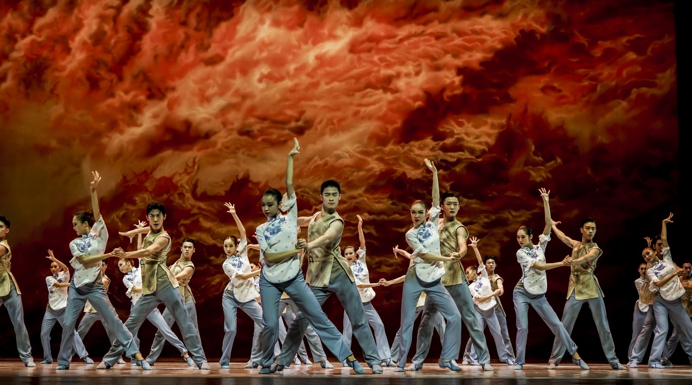
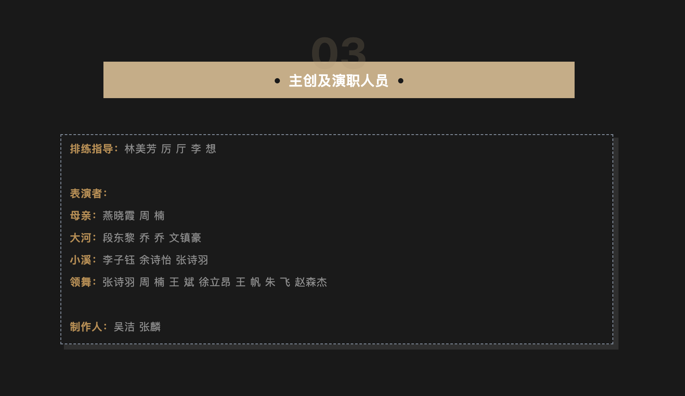
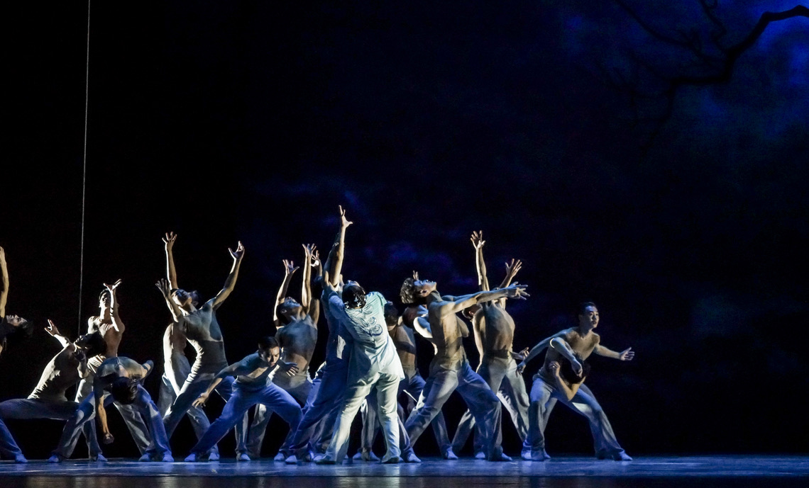
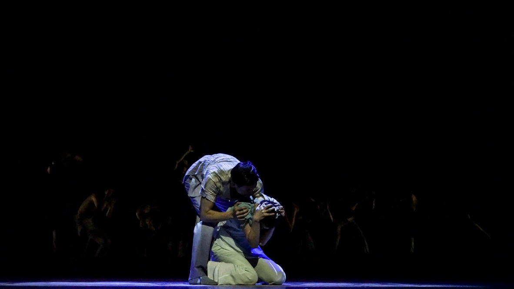
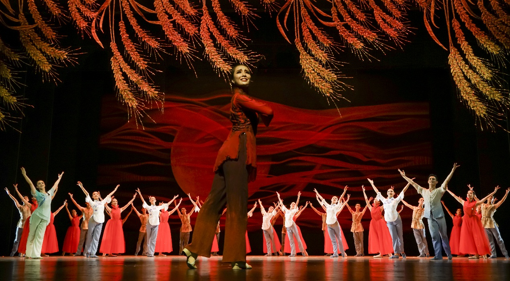
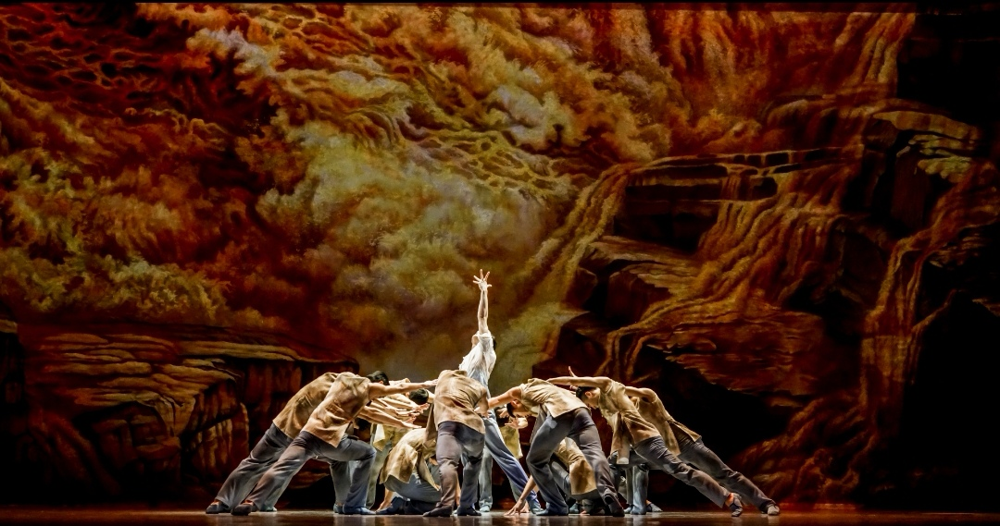
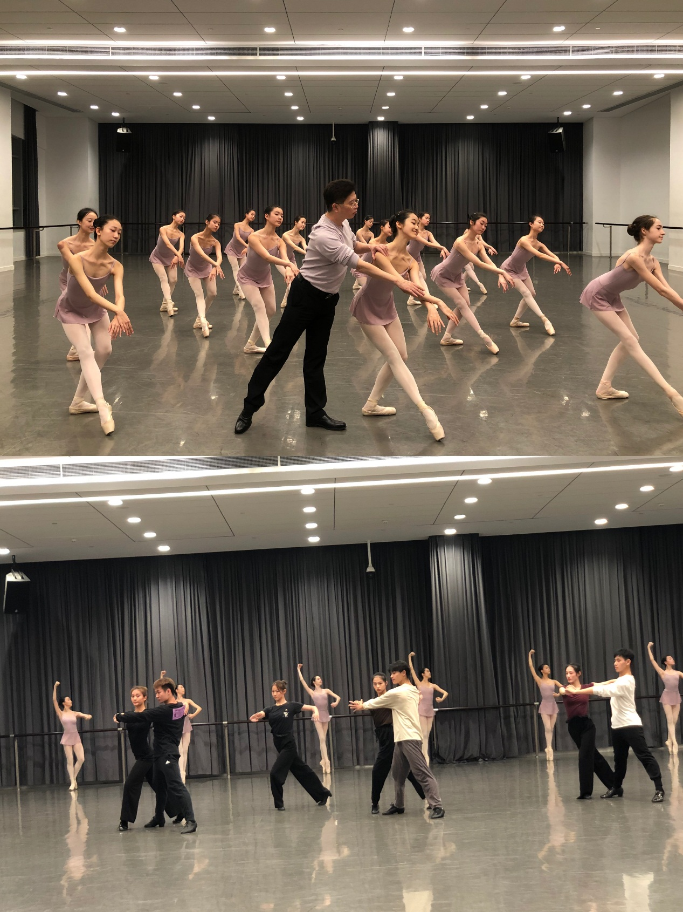
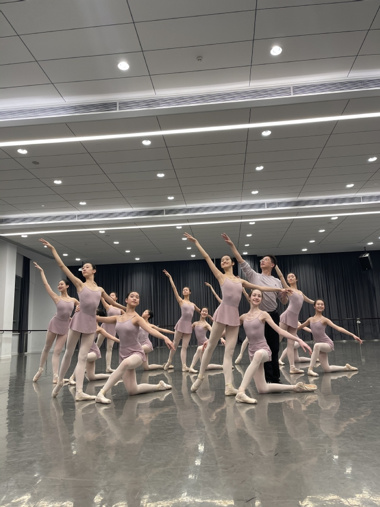

Shanghai Theatre Academy
The Yellow River
Principal Role: Dahe (大河)One of three rotating principal performers in the production’s sole male lead role. The Yellow River (黄河) is a large-scale symphonic dance poem produced by the Dance School of Shanghai Theatre Academy with its affiliated Shanghai Dance School. It ran for six consecutive days at the Grand Theatre of the Shanghai International Dance Center, from 1 to 6 July 2021.

Curtain Call
Live recording · 0:30
Role
Dahe (大河)
Dahe is the production’s sole male lead. I was one of three rotating principal performers cast in the role across the six-day run.
Dahe carries the river itself as a figure. The role runs the length of the work, moving between solo passages and the full ensemble, and holds the through-line that the four sections are built around.
Production
Shanghai Theatre Academy Dance School and Shanghai Dance School
Shanghai Theatre Academy describes The Yellow River as a flagship work, developed and reworked over several years by its Dance School together with the affiliated Shanghai Dance School. The production is a designated major arts commission of the Shanghai Culture Development Foundation. The choreographic team was led by Chen Jianian, Dean of the Dance School of Shanghai Theatre Academy and Vice Chair of the Shanghai Dancers Association.
According to the Academy, the work was the first dance poem to bring ballroom vocabulary into the form. It first went on stage in 2019, was revised repeatedly across subsequent runs, and the Academy reports that performances sold out.
- Role
- Dahe (大河), sole male lead, one of three rotating principals
- Lead choreographer
- Chen Jianian
- Produced by
- Dance School, Shanghai Theatre Academy, with the affiliated Shanghai Dance School
- Venue
- Grand Theatre, Shanghai International Dance Center
- Run
- 1–6 July 2021, six consecutive days
- Support
- Major arts commission, Shanghai Culture Development Foundation
The official cast listing names Zhenhao Wen (文镇豪) among the three performers of Dahe.
Performance History
The Yellow River and Defend the Yellow River, 2019 and 2021
My performance record includes the 2019 staging of The Yellow River, principal casting in the 2021 production, and three presentations of Defend the Yellow River across Shanghai and Taicang.
- Defend the Yellow River. Performer at Shanghai Grand Theatre, Shanghai.
- The Yellow River. Principal role of Dahe (大河), one of three rotating principals in the six-day production run. Shanghai International Dance Center Grand Theatre.
- Defend the Yellow River. Performer in the Shanghai Youth Song Gala, Shanghai Oriental Sports Center.
- Defend the Yellow River. Performer in Tribute to Wu Xiaobang, China Taicang Dance Night, Taicang Grand Theatre, Jiangsu.
- The Yellow River. Performer at Shanghai International Dance Center, Shanghai.
Official Cast Listing
Changning Cultural Arts Center · Production cast and creative listing
The official listing identifies the three performers of Dahe (大河) as 段东黎、乔乔、文镇豪. This directly documents Wen’s casting in the production’s sole male lead role.

Coverage
- Shanghai Theatre Academy, Public Information Office
- China News Service, Overseas Chinese Network
The Academy announcement sets out the production’s funding, its choreographic leadership, the venue and the six-day run. The China News Service report covers a rehearsal visit in June 2021 and the combination of dance forms in the work. Neither article names individual performers.
On Stage
Shanghai International Dance Center Grand Theatre






Images: Shanghai Theatre Academy Dance School. Applies to the four photographs in the grid above. The cover, ensemble and duet photographs are production stills held by the performer.